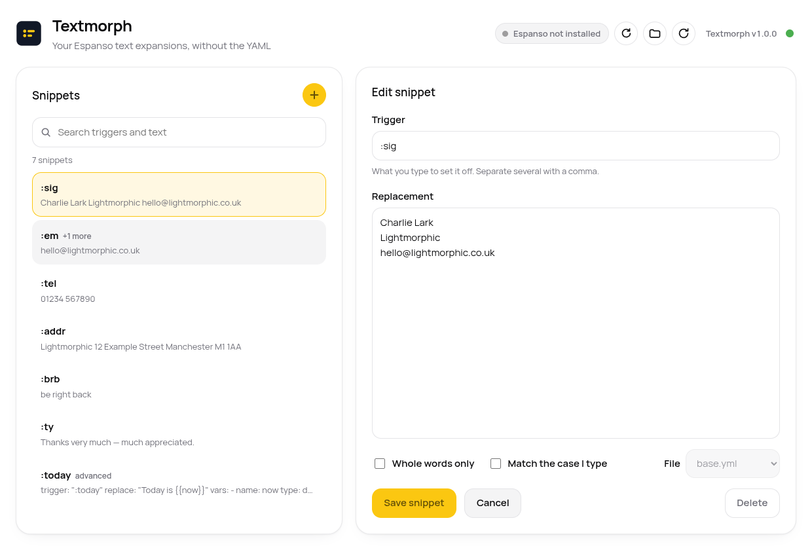
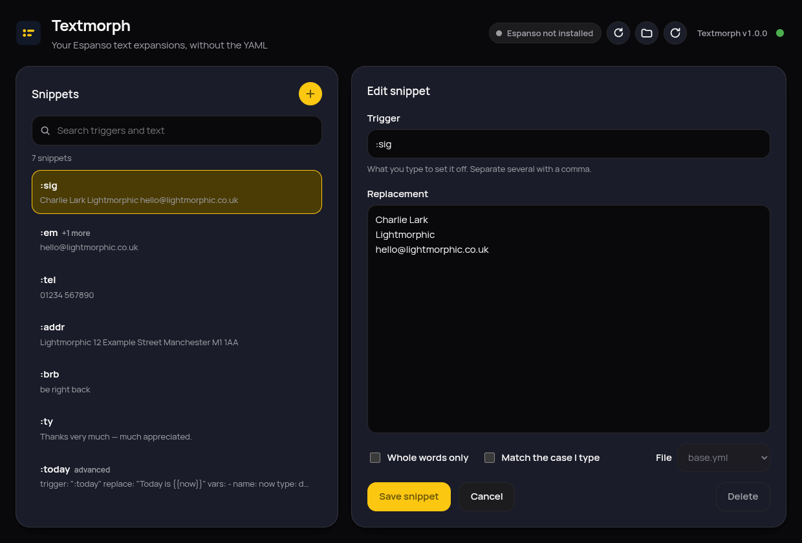
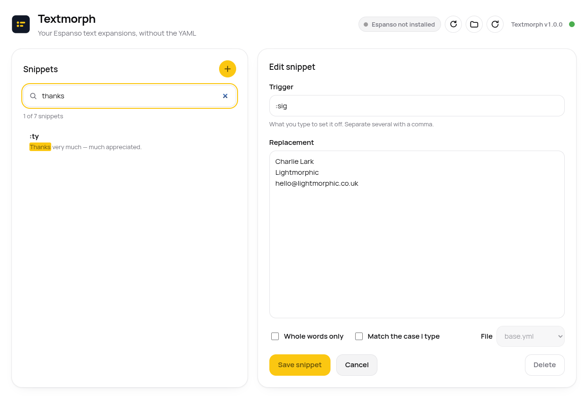

Your Espanso snippets, without the YAML
Lightmorphic Text is a graphical front end for Espanso, the text expander. Browse, search, add and edit your expansions without ever opening a configuration file.


What it does
Every snippet in one searchable list
Lightmorphic Text reads all the match files in your Espanso configuration and shows every trigger with its replacement. Search matches both as you type, so a half-remembered snippet is a few keystrokes away.

A form, not a text editor
Trigger, replacement, whole-words-only and case matching. That's the whole thing — no syntax to learn, nothing to indent.
Your files stay yours
Comments, key order, blank lines and quoting are preserved; only the values you actually changed get rewritten. Every save keeps a backup first.
Advanced snippets are left alone
Anything using variables, forms, scripts or regular expressions is listed and shown exactly as it appears in the file, marked read-only, and never quietly rewritten.
Changes take effect immediately
Espanso reloads after every save, so a new snippet works the moment you finish typing it.
Guided first run
If Espanso isn't installed, Lightmorphic Text installs it — in your home folder, nothing system-wide. On Wayland it walks you through the one permission step that needs you.
Light and dark
Follows your desktop's choice, in the app and on this page.
Installing
- Download the AppImage from the latest release.
-
Make it executable and run it:
chmod +x LightmorphicText-*.AppImage ./LightmorphicText-*.AppImage
Works out of the box on current distributions and older ones alike — no extra FUSE packages to install. Lightmorphic Text checks for updates itself and offers them from the dot in its top-right corner. Works the same on immutable systems such as Fedora Silverblue and Bazzite.